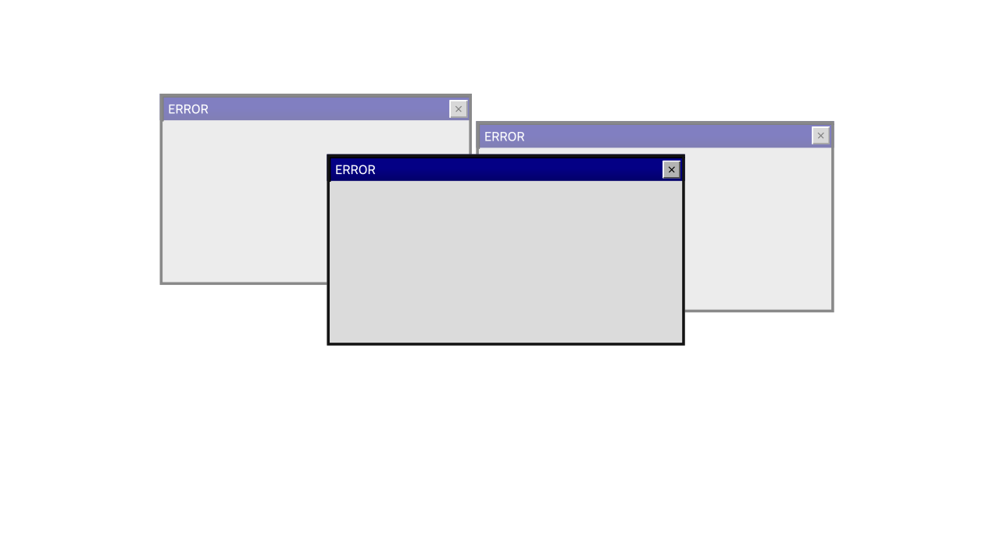
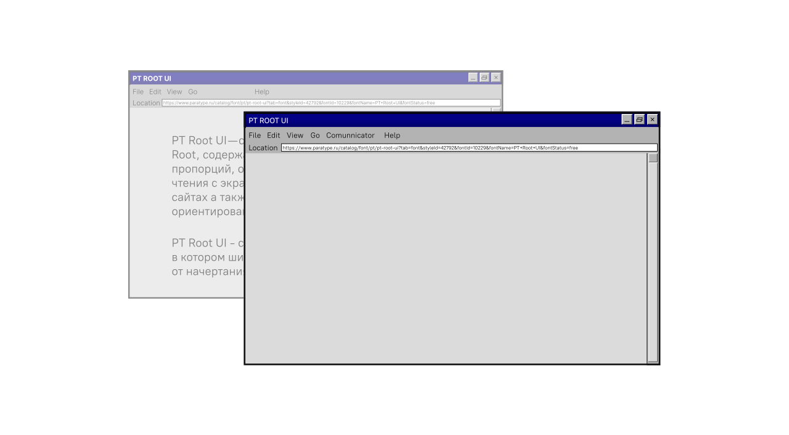
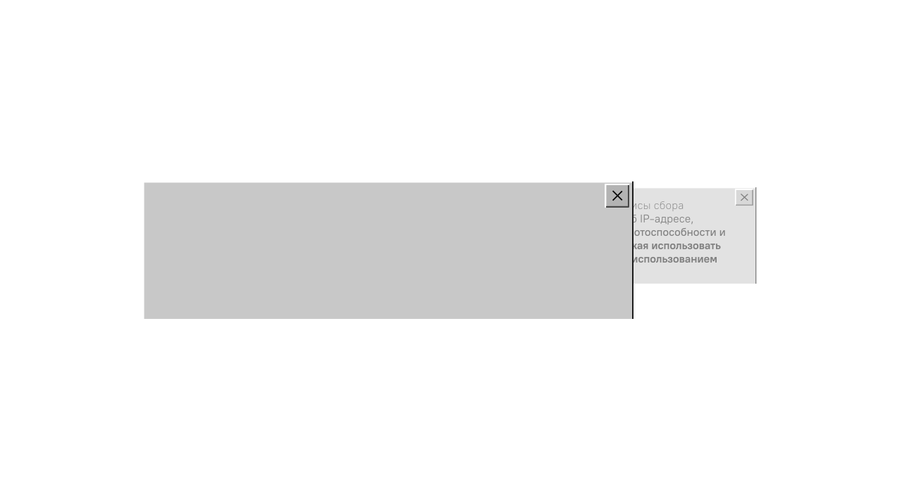
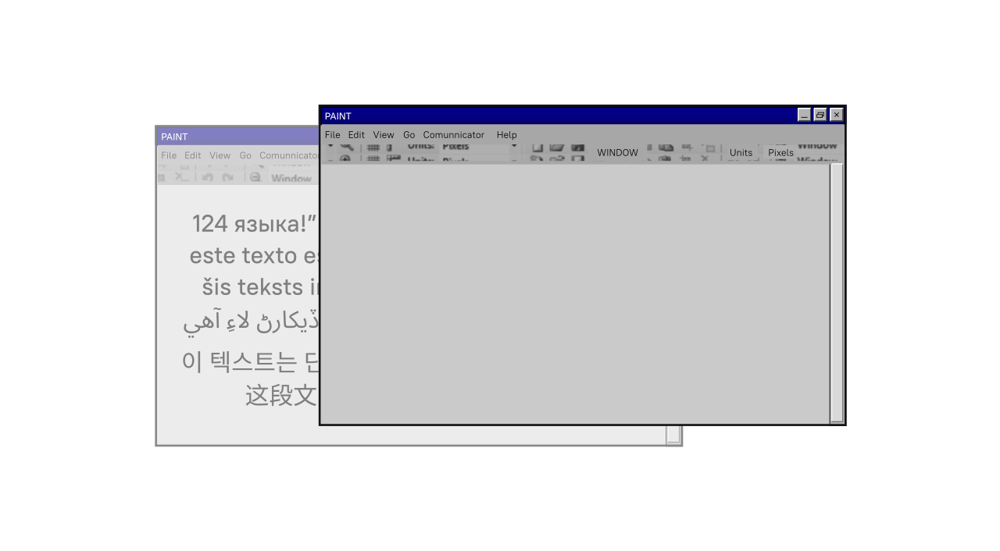
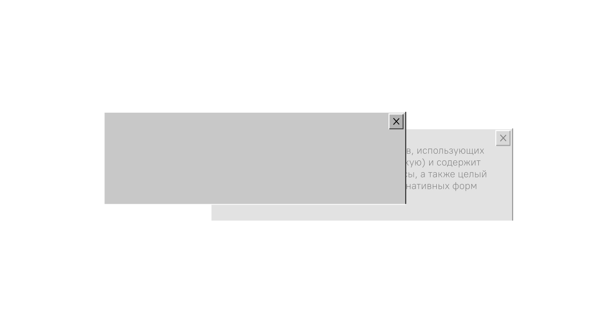
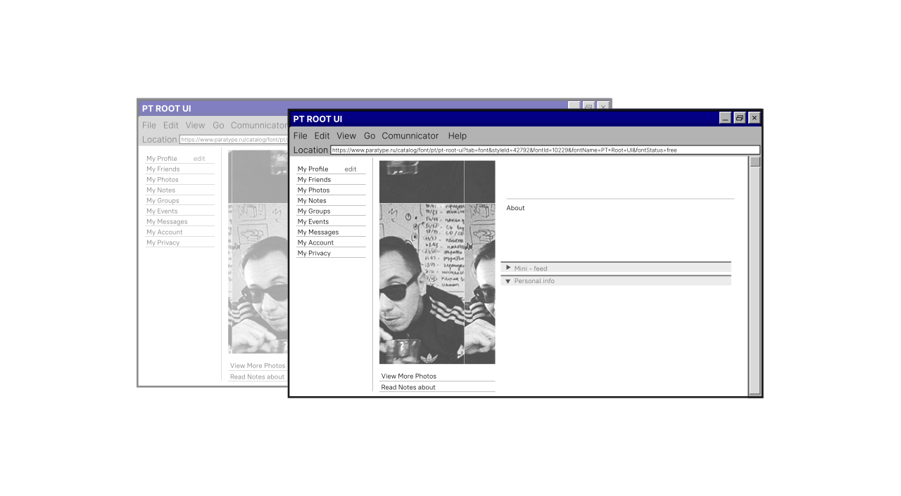

PT
ROOT
UI

PT Root UI — самостоятельная линейка гарнитуры PT Root, содержащая четыре начертания нормальных пропорций, от Light до Bold, предназначенных для чтения с экрана, использования в интерфейсах, на веб-сайтах а также пригодных для навигации и ориентирования.
PT Root UI - современный закрытый гротеск, в котором ширина площадки знака не меняется от начертания к начертанию.

Этот сайт использует файлы сcookies и сервисы сбора
технических данных посетителей
(данные об IP-адресе,
местоположении и др.)
для обеспечения работоспособности
и улучшения качества обслуживания.
Продолжая использовать
наш сайт, вы автоматически соглашаетесь с использованием
данных технологий.

124 языка!”№%:,.;()_+{}=-09876543321
este texto es solo para mostrar tu lengua
šis teksts ir tikai, lai parādītu savu mēli
هي متن صرف توهان جي زبان کي ڏيکارڻ لاءِ آهي
이 텍스트는 단지 당신의 혀를 자랑하기 위한 것
这段文字只是为了炫耀你的舌头

Шрифт поддерживает множество языков, использующих
латиницу и кириллицу (включая азиатскую) и содержит
варианты цифр и валют, дроби и индексы, а также целый
ряд навигационных элементов и альтернативных форм
знаков.

Виталий Кузьмин
Графический и шрифтовой дизайнер,
леттерер и график. Занимается
аналоговой фотографией.
Виталий — дизайнер в Паратайпе, автор гарнитур PT Root, PT Root UI,
Sober Sans, соавтор Golos UI и Golos Text. Участвовал в разработке
шрифтов для Dodo Pizza. Автор интерфейсных шрифтов VTB Group
и интерфейсных начертаний шрифтовой системы Сбера, которая
получила награды конкурсов GRANSHAN, Red Dot и ED Awards.
Основатель проектов Boring fonts и darkroom.ru,
сооснователь мастерской графического дизайна Grani.